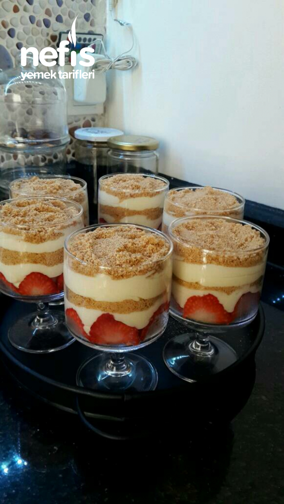

...Çikolata Küpleri...
Çikolatalı ve şam fıstıklı tadımlık lezzetler... Yalnızca 4 malzeme ile hazırlanan çikolata küpleri, renkli kağıtlarda veya
kürdan batırılarak servis edilir. Özellikle kalabalık sofralarda yer verilen çikolata küpleri, doğum günü gibi özel etkinliklerdede sunulabilir.
Hazırlayan:Rukiye Beyza Sarıkaya
Malzemeleri
- 1 litre süt
- 3 yemek kaşığı un
- 2 yemek kaşığı nişasta
- 1 su bardağı şeker
- 1 adet yumurta sarısı
- 1 paket sıvı krema
- 1 paket vanilya
- 1,5 paket burçak bisküvi
- Çilek
Yapılışı
- Tencereye süt, şeker, nişasta, un ve yumurtayı alalım.
- Çırpma teli ile çırpalım.
- Ocağa alıp karıştırmaya başlayalım.
- Kıvamı koyulaşıp, göz göz oluncaya kadar pişirelim.
- Ocaktan alalım, vanilya ekleyelim ve karıştıralım. Soğumaya bırakalım.
- Muhallebimiz soğurken, ara ara karıştıralım ki üzeri kabuk tutmasın.
- Muhallebi soğurken, bisküvileri rondodan geçirelim.
- Muhallebimiz soğuduktan sonra, içine bir paket krema ilave edip mikser ile çırpalım.
- Çilekleri ince dilimler halinde keselim.
- Kupların en dibine 1 yemek kaşığı bisküvi ekleyelim.
- Çilekleri görüntülerdeki gibi dizelim ve üzerine muhallebi ilave edelim.
- Daha sonra bir kat daha bisküvi ve yine muhallebi, en son bisküvi olacak şekilde pay edelim.

Afiyet Olsun